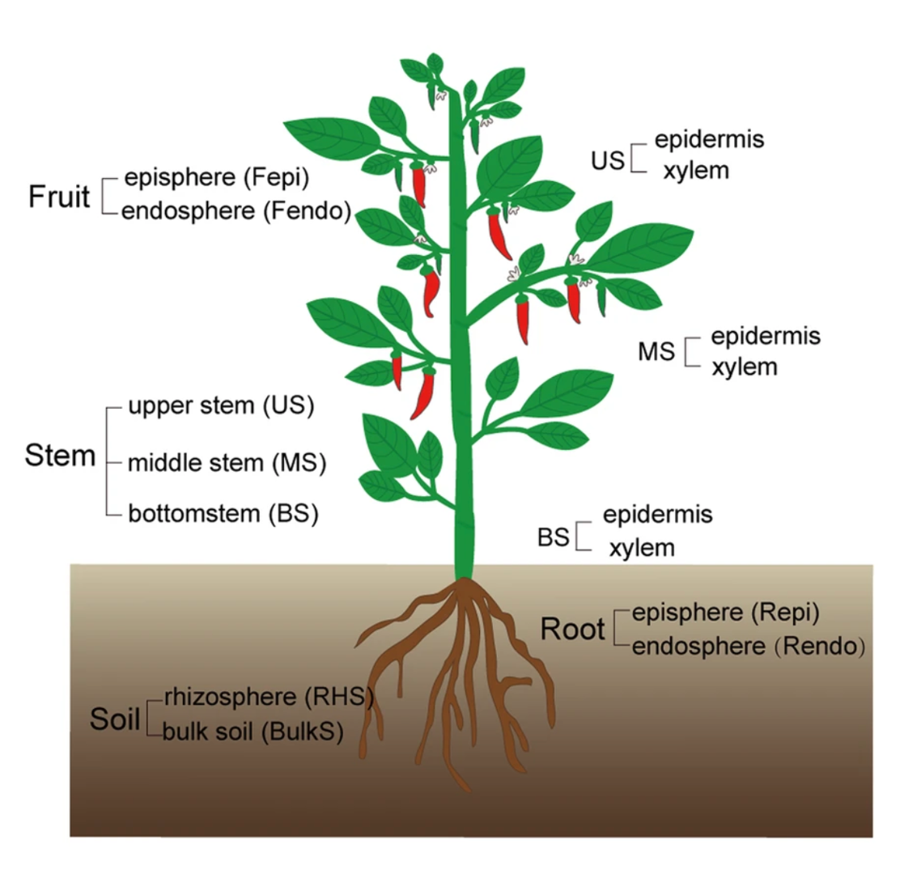

Starting a Metagenomics Project
Metagenomics
Metagenomes are collections of genomic sequences from various (micro)organisms that coexist in any given space. They are like snapshots that can give us information about the taxonomic and even metabolic or functional composition of the communities we decide to study. Thus, metagenomes are usually employed to investigate the ecology of defining characteristics of niches (* e.g.,*, the human gut or the ocean floor).
Since metagenomes are mixtures of sequences that belong to different species, a metagenomic workflow is designed to answer two questions:
What species are represented in the sample?
What are they capable of doing?
To find which species are present in a niche, we must do a taxonomic assignation of the obtained sequences. To find out their capabilities, we can look at the genes directly encoded in the metagenome or find the genes associated with the species that we found. In order to know which methodology we should use, it is essential to know what questions we want to answer.
Shotgun and amplicon
There are two paths to obtain information from a complex sample:
Shotgun Metagenomics
Metabarcoding.
Each is named after the sequencing methodology employed Moreover, have particular use cases with inherent advantages and disadvantages.
With Shotgun Metagenomics, we sequence random parts (ideally all of them) of the genomes present in a sample. We can search the origin of these pieces (i.e., their taxonomy) and also try to find to what part of the genome they correspond. Given enough pieces, it is possible to obtain complete individual genomes from a shotgun metagenome (MAGs), which could give us a bunch of information about the species in our study. MAGs assembly, however, requires a lot of genomic sequences from one organism. Since the sequencing is done at random, it needs a high depth of community sequencing to ensure that we obtain enough pieces of a given genome. Required depth gets exponentially challenging when our species of interest is not very abundant. It also requires that we have enough DNA to work with, which can be challenging to obtain in some instances. Finally, sequencing is expensive, and because of this, making technical and biological replicates can be prohibitively costly.
On the contrary, Metabarcoding tends to be cheaper, which makes it easier to duplicate and even triplicate them without taking a big financial hit. The lower cost is because Metabarcoding is the collection of small genomic fragments present in the community and amplified through PCR. Ideally, if the amplified region is present only once in every genome, we would not need to sequence the amplicon metagenome so thoroughly because one sequence is all we need to get the information about that genome, and by extension, about that species. On the other hand, if a genome in the community lacks the region targeted by the PCR primers, then no amount of sequencing can give us information about that genome. Conservation across species is why the most popular amplicon used for this methodology are 16S amplicons for Bacteria since every known bacterium has this particular region. Other regions can be chosen, but they are used for specific cases. However, even 16S amplicons are limited to, well, the 16S region, so amplicon metagenomes cannot directly tell us a lot about the metabolic functions found in each genome, although educated guesses can be made by knowing which genes are commonly found in every identified species.

On Metadata
Once we have chosen an adequate methodology for our study, we must take extensive notes on the origin of our samples and how we treated them. These notes constitute the metadata, or data about our data, and they are crucial to understanding and interpreting the results we will obtain later in our metagenomic analysis. Most of the time, the differences that we observe when comparing metagenomes can be correlated to the metadata, which is why we must devote a whole section of our experimental design to the metadata we expect to collect and record carefully.
Our Dataset - Microbiome of Healthy and Diseased Chilli Peppers
The data we will use during this workshop comes from a study examining the microbiome of healthy and diseased chilli peppers Gao et al. Microbiome (2021) 9:187.
The disease causing organism of interest was Fusarium oxysporum f. sp. capsici, which causes Fusarium wild disease (FWD) in chilli peppers. The study examined the recruitment of protective microbes to suppress pathogen growth during FWD infection. They researchers hypothesised that infection would more severely impact vegetative organs (the root, stem and leaves), rather than reproductive (the fruit, flower and seed). They also predicted that fungal communities would be more sensitive to FWD than bacterial, as fungal communities are more responsive to vegetative change than bacterial. Finally, they surmised that functional differences would occur between the healthy and diseased plants.

Plant samples were obtained from chilli pepper production fields, divided into healthy (those plants showing no disease and testing pathogen-negative) and diseased (those that showed wilt symptoms and tested pathogen-positive). Each plant sample was divided into 12 compartments: the bulk soil (BulkS), rhizosphere soil (RHS), root episphere (Repi) and endosphere (Rendo), bottom stem epidermis (BS-epidermis) and xylem (BS-xylem), middle stem epidermis (MS-epidermis) and xylem (MS-xylem), upper stem epidermis (US-epidermis) and xylem (US-xylem), and fruit episphere (Fepi) and endophere (Fendo).
Throughout the lesson, we will be using samples from upper stem epidermis (US-epidermis), from healthy or diseased plants. The IDs and samples are below:
| SRA Accession | Sample Name | Plant Condition | Sequencing Method |
|---|---|---|---|
| SRR12773249 | B_Sample_98 | Healthy | Metabarcoding |
| SRR12773081 | F_Sample_98 | Healthy | Metabarcoding |
| SRR12778015 | Sample_98 | Healthy | Shotgun Metagenomics |
| SRR12773380 | B_Sample_108 | Diseased | Metabarcoding |
| SRR12773212 | F_Sample_108 | Diseased | Metabarcoding |
| SRR12778021 | Sample_108 | Diseased | Shotgun Metagenomics |
The results of this study, raw sequences, and metadata have been submitted to the NCBI Sequence Read Archive (SRA) and stored in the BioProject PRJNA667562.